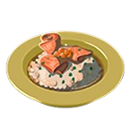

Salmon risotto

Salmon Risotto can be made by Cooking a Hearty Salmon, Hylian Rice, Goat Butter, and Rock Salt together in a Cooking Pot.
The only way to make regular Salmon Risotto is by adding a fifth ingredient that grants an effect other than hearty.
Eating these meals will heal some of the Hearts in Link's Life Gauge.
This risotto is known the be rich, as the rice permeates the light flavor of the salmon.
Hearty Salmon
Hylian Rice
Goat Butter
Rock Salt
Steps
Open your inventory
Grab all the ingredients listed above
Throw all the ingredients into the cooking Pot
Wait for it to finish cooking
Enjoy your Meal!
Especial Effects and combinations
Hearty Salmon Risotto: Made by using the default recipe. When these meals are consumed, all of Link's Hearts will be healed, and he will gain temporary Hearts.